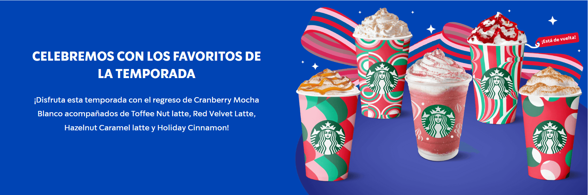

Nuestro Menú
Latte

Disfruta de nuestro delicioso Latte, personalizable y disponible en diferentes tamaños.
Café

Elige entre nuestros cafés frescos y aromáticos, perfectos para cualquier momento del día.
Temporada
Prueba nuestras bebidas especiales, solo disponibles por tiempo limitado.
Planeta

Contribuye al cuidado del planeta con nuestras opciones ecológicas y sostenibles.
Especialidades

Descubre nuestras bebidas exclusivas.

Sabores únicos, hechos solo para ti.